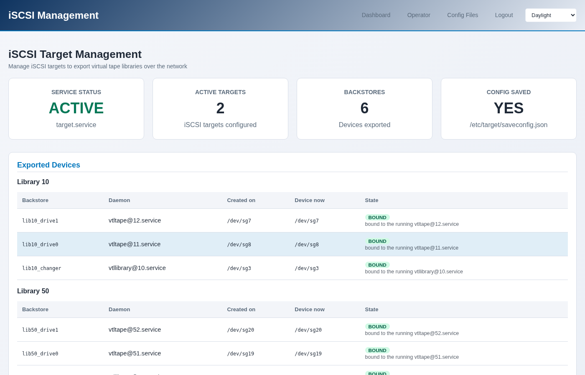
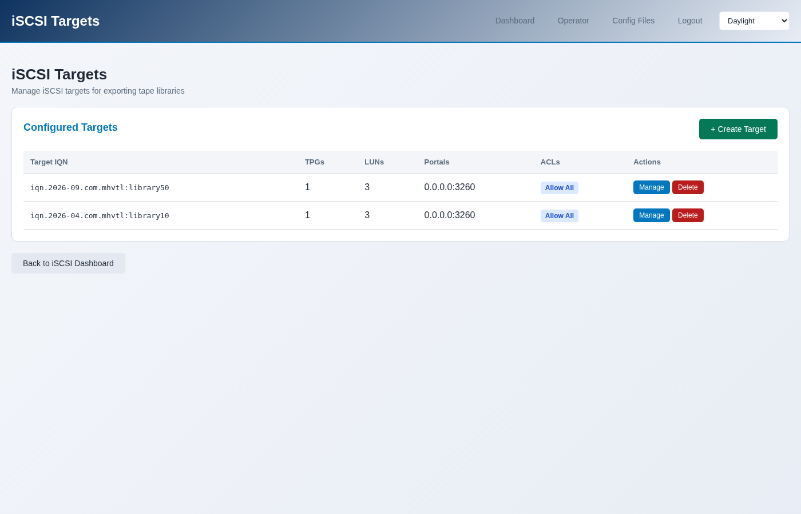

Exporting a library over iSCSI
Exporting makes a library visible to another machine, which then sees a tape library on its own SCSI bus and backs up to it as if it were plugged in.
What gets exported
Three devices per library, at least: the robot, and each drive. Backup software needs all of them - the robot to move cartridges, the drives to write.
$ sudo mhvtl iscsi export 50
Library 50 exported as iqn.2026-09.com.mhvtl:library50: 3 LUN(s)
That is library 50, which has two drives: one changer and two drives make three LUNs.
In the console it is iSCSI → Export Library, or The library → Export over iSCSI on the library page.
{kind=link}

What it made
$ sudo mhvtl iscsi targets
IQN TPG LUNS ACLS ANY INITIATOR
------------------------------- --- ---- ---- -------------
iqn.2026-09.com.mhvtl:library50 1 3 0 yes
iqn.2026-04.com.mhvtl:library10 1 3 0 yes
$ sudo mhvtl iscsi backstores
NAME PLUGIN DEVICE PATH
------------- ------ -----------
lib50_drive1 pscsi /dev/sg20
lib50_drive0 pscsi /dev/sg19
lib50_changer pscsi /dev/sg18
IQN is the target’s name, which the other machine uses to find it.
{kind=link}

ANY INITIATOR means no access list: anything that can reach the port may
use it. To restrict it, export with --initiator, or add an ACL:
$ sudo mhvtl iscsi export 50 --initiator iqn.1994-05.com.redhat:client1
Connecting from another machine
On the client, with iscsi-initiator-utils installed:
# discover what this host offers
$ sudo iscsiadm -m discovery -t sendtargets -p mhvtl-host:3260
# log in to the library
$ sudo iscsiadm -m node -T iqn.2026-09.com.mhvtl:library50 \
-p mhvtl-host:3260 --login
# it is now a changer and two drives on this machine
$ lsscsi -g | grep -E "mediumx|tape"
From there it is an ordinary tape library: mtx drives the robot, mt
and tar the drives. The tutorial Exporting a library with Linux tools
in the Guides walks through a full backup and restore across the wire.
After a reboot, or after recreating a library
An export names devices by their /dev/sg node, and those numbers are not
stable: they change when the MHVTL module reloads, and when a library is
recreated. An export pointing at the wrong node is worse than one that is
missing.
The console keeps a record of which daemon each backstore was made for, and repoints them by SCSI address:
$ sudo mhvtl iscsi remap
BACKSTORE SAVED NOW WHY
------------- --------- --------- ---------------
lib50_drive1 /dev/sg20 /dev/sg20 already correct
lib50_drive0 /dev/sg19 /dev/sg19 already correct
lib50_changer /dev/sg18 /dev/sg18 already correct
The iSCSI page shows the same thing per device: Created on is the node
the backstore was made with, Device now is where that daemon actually is,
and State is BOUND when they agree. A stale one says so.
This runs automatically at boot, through mhvtl-iscsi-remap.service.
Removing an export
$ sudo mhvtl iscsi target delete iqn.2026-09.com.mhvtl:library50
Deleted target iqn.2026-09.com.mhvtl:library50
Log the client out first, or it keeps a session to a target that has gone.
The target goes; its backstores stay. They are the devices, and deleting
a target does not assume you meant to stop exporting them - the same devices
can be mapped into another target. mhvtl iscsi backstores still lists
them afterwards, and they are removed with targetcli:
$ sudo targetcli /backstores/pscsi delete lib50_changer
$ sudo targetcli /backstores/pscsi delete lib50_drive0
$ sudo targetcli /backstores/pscsi delete lib50_drive1
$ sudo targetcli saveconfig
Is the service even running?
$ sudo mhvtl iscsi status
target.service running
enabled yes
targets 1
backstores 3
luns 3
config saved yes
read from saveconfig.json
config saved matters: LIO keeps its configuration in
/etc/target/saveconfig.json, and an export that was never saved is gone
at the next reboot. The console saves after every change.